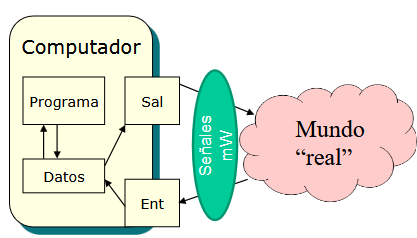
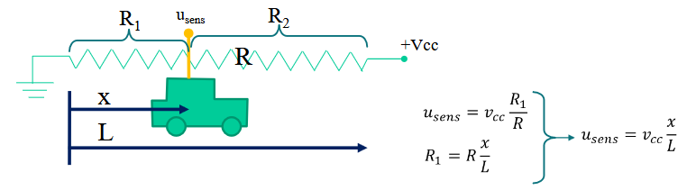
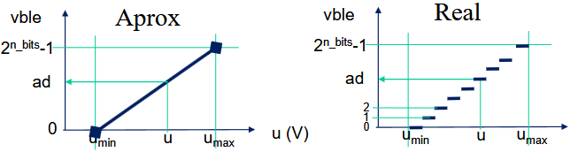
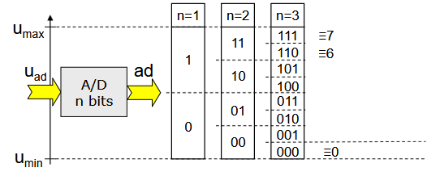
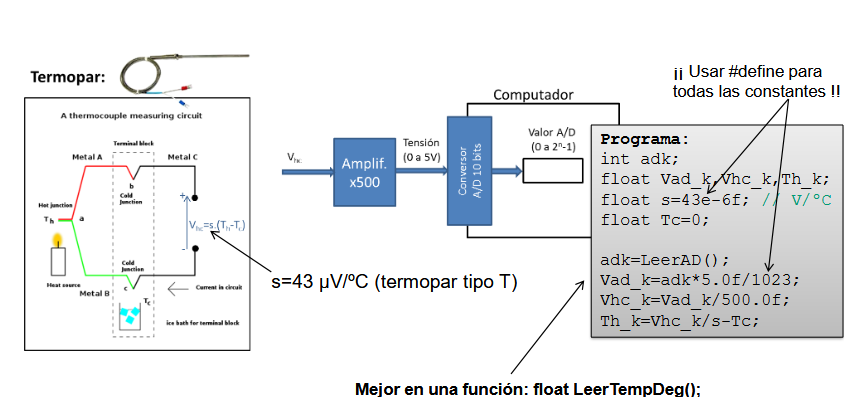
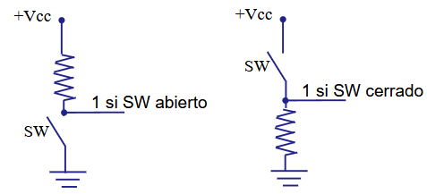
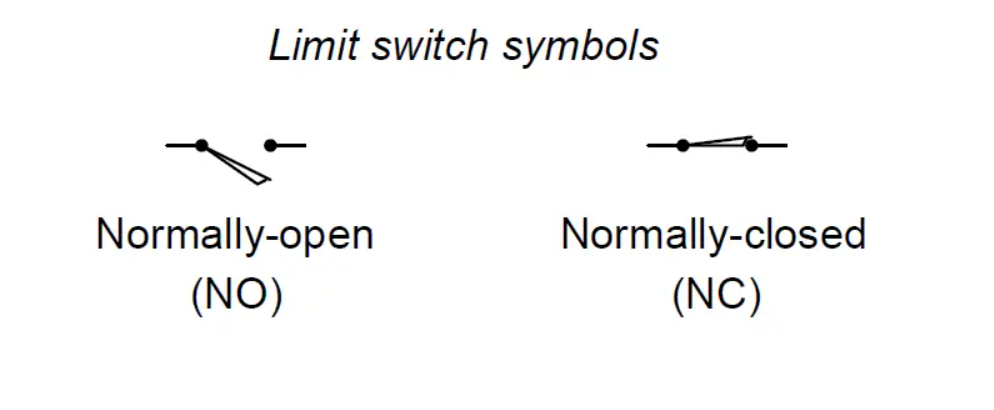
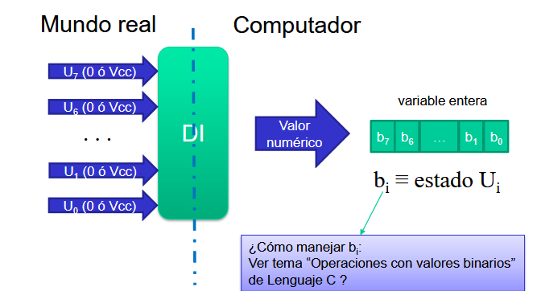
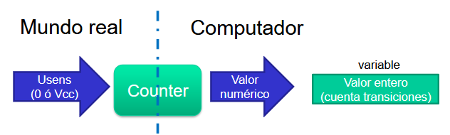
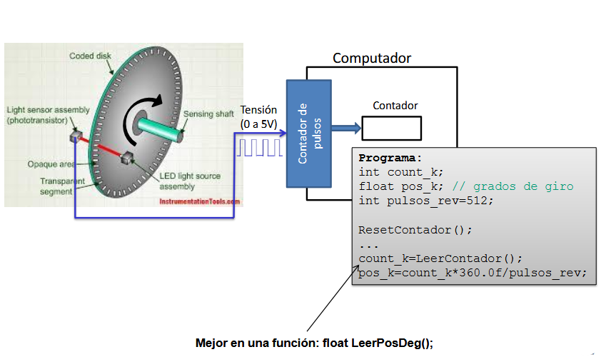

Conexión entre el software en C y los periféricos físicos
Ingeniería de Sistemas y Automática — Universidad de Oviedo


De la magnitud física a la variable en el computador

0 a 2n-1).

▫ Atención: El programa del computador sólo puede leer el valor del conversor, que está relacionado (pero no es) con la magnitud medida.
▫ El programa debe calcular la magnitud a partir de las especificaciones de toda la cadena de medida (sensor, adaptación, ADC).
Adquisición de temperatura medida por termopar con conversor A/D de 10 bits y límites de tensión 0-5V.





Ejemplo: entrada de pulsos de un encóder óptico.

Para la CPU, acceder a los periféricos de entrada y salida es conceptualmente idéntico a leer o escribir en posiciones de memoria RAM:
| Dirección E/S | Registro (8 bits) |
|---|---|
| 0x00 (PUERTO_A) | 0 1 0 1 0 0 0 1 |
| 0x01 (PUERTO_B) | 1 0 1 0 1 0 0 0 |
Diferencia clave: Cada bit de cada dirección en el mapa de E/S está físicamente conectado a una patilla (pin) o circuito exterior.
Evalúa si la tensión en el pin está por debajo del umbral de '0' (ej. < 0.8 V) o por encima del umbral de '1' (ej. > 2.4 V).
0 en reposo y 1 al ser pulsados.1 en reposo).
// Ejemplo: Control de inicio de ciclo
int marcha = LeerPinDigital(PIN_BOTON_START);
if (marcha == 1) {
IniciarProceso();
} else {
EsperarOperador();
}
El software escribe un valor '0' o '1' en un registro de salida para activar un interruptor de estado sólido o electromecánico.
// Ejemplo: Control de Bomba de Calefacción
if (temperatura_actual < TEMP_CONSIGNA) {
EscribirPinDigital(PIN_RELE_BOMBA, 1); // Encender
} else {
EscribirPinDigital(PIN_RELE_BOMBA, 0); // Apagar
}
▫ Operaciones con el bit de peso P de la variable entera X:
Para operar sobre un solo bit sin alterar el resto, creamos una mascara = 1 << P (desplaza el bit 1 P posiciones a la izquierda, generando el binario con solo ese bit activo).
| Operación sobre el bit P | Sintaxis en C (Variable X) | Lógica de Control Industrial |
|---|---|---|
| ¿Está activo el bit de peso P? | if (X & mascara) | Consultar estado de un sensor o pulsador. |
| Poner a 1 el bit de peso P | X = X | mascara; | Activar un relé, válvula o motor. |
| Poner a 0 el bit de peso P | X = X & ~mascara; | Desactivar una salida o limpiar alarma. |
| Cambiar/Invertir el bit P (Toggle) | X = X ^ mascara; | Bascular el estado (ej. parpadeo de LED). |
Mide una tensión continua y la divide en 2n niveles enteros:
// Lectura de ADC de 10 bits (0..1023)
int ad_k = LeerADC(CANAL_TERMOPAR);
// 1. Convertir cuentas del ADC a voltios
float Vad_k = ad_k * (5.0f / 1023.0f);
// 2. Deshacer la amplificación x500 previa
float Vhc_k = Vad_k / 500.0f;
// 3. Convertir voltios a grados Celsius
float temp_c = Vhc_k / SENSIBILIDAD_TERMOPAR;
Convierte el valor entero calculado en C a un nivel proporcional de tensión para mandar a un variador de velocidad o válvula proporcional.
// Apertura deseada en porcentaje (0.0% a 100.0%)
float apertura_pct = 75.0f;
// Tensión deseada en la válvula (0 a 24V)
float Vvalvula = (apertura_pct / 100.0f) * 24.0f;
// Tensión enviada al DAC de 8 bits (atenuada x5)
float Vdac = Vvalvula / 5.0f;
int da_k = (int)(Vdac / 5.0f * 255.0f);
EscribirDAC(da_k);
Cuenta transiciones de pulsos. Con señales A y B desfasadas 90° (cuadratura), el hardware detecta el sentido de giro.
int count_k = LeerContadorEncoder();
float pos_deg = count_k * (360.0f / PULSOS_REV);
Simula una tensión analógica conmutando una señal digital a frecuencia fija. Varía el Duty Cycle (TON / TPWM).
float duty_k = Vcontrol / Vmax; // Rango 0.0 a 1.0
float Ton_k = duty_k * Tpwm;
EscribirPWM(Ton_k);
Los sensores y actuadores industriales modernos sustituyen las líneas analógicas simples por **buses de comunicación digital serie**:
Init_I2C()).#define para constantes de hardware: Declarar siempre las resoluciones de bits, ganancias, voltajes de alimentación y direcciones de puertos mediante constantes para evitar "números mágicos".float LeerTemperatura() o void ActivarMotor(float V) en lugar de manipular los registros directamente en el main()..0f).